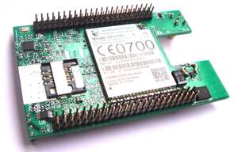
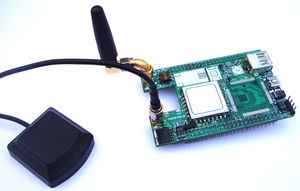
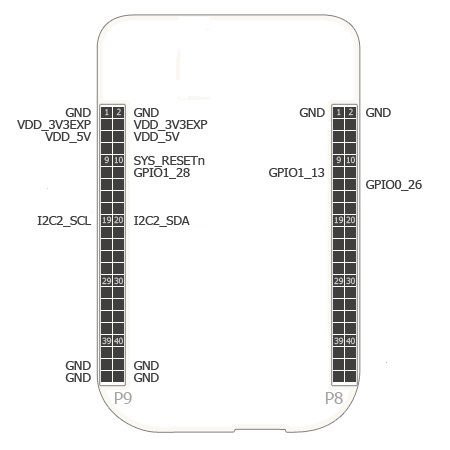
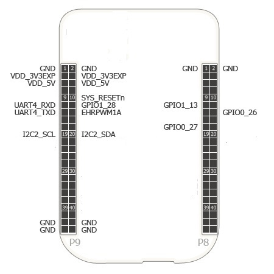

Vayu 3GC/3GCP Cape
Descriptions
This cape provides seamless internet connectivity to the Beaglebone via CDMA network anytime anywhere. It also has an optional GPS add-on for location and time synchronization (1pps signal, 2 microsecond jitter accuracy).
Vayu 3GC Cape is catering to CDMA network and is based on the Qualcomm QSC6085 chipset and supports CDMA2000 IX/EV-DO Rev A network. It is compatible with CDMA 800 MHz / 1900 MHz bands. It provides a maximum of 3.1Mbps/1.8 Mbps (DL/UL) speed.
VAYU 3GCP Cape provides an add-on GPS module integrated with WCDMA modem which provides standard compliant NMEA based geolocation and global time synchronization (1pps, 0.2 microsecond jitter accuracy).
 
Specifications
| Electrical Specifications | |
|---|---|
| Power | 3.3V via expansion header |
| 5V via expansion header | |
| Indicators | yes |
| Connectors | Two 46-position connectors |
| SMA connectors for GSM and GPS antennas | |
| USB-A to mini USB-B cable, uses USB host on Beaglebone Black but a host port is | |
| made available on cape for connecting to any other attachment. |
| Mechanical Specifications | |
|---|---|
| Size | 3.40" x 2.15" |
| Layers | 4 |
| PCB Thickness | .062" |
| RoHS Compliant | Yes |
| GPIO Pin out | |
|---|---|
| P9.10 | Beaglebone black and Cape reset |
| P9.12 | Modem Reset |
| P9.19 | I2C Bus for EEPROM |
| P9.20 | |
| P9.11 | GPS NMEA serial data port |
| P9.13 | |
| P9.14 | GPS Module Reset |
| P8.11 | Modem Power On Off |
| P8.13 | Modem Status |
| P8.14 | Modem Wakeup_in / Ring Indicator |
| P8.17 | GPS Module 1 PPS Input |
EEPROM
| Vayu 3GH Cape | |
|---|---|
| EEPROM Suport | Yes |
| Board Name | Vayu 3GC Cape |
| Version | A |
| Manufacturer | Yantrr Electronic Systems |
| Part Number | VAYU-3GC-A |
| Pins Used | 3 |

| Vayu 3GHP Cape | |
|---|---|
| EEPROM Suport | Yes |
| Board Name | Vayu 3GCP Cape |
| Version | A |
| Manufacturer | Yantrr Electronic Systems |
| Part Number | VAYU-3GCP-A |
| Pins Used | 7 |

| Documentations | |
|---|---|
| Open Source | Partly on proven request |
| System Reference Manual | Yes |
| Schematics | Partly on proven request |
| PCB Files | No |
| Gerber Files | No |
| Bills of Materials | No |
Vendors
Manufacturer's Link
For more information about this cape, please visit Yantrr Electronic Systems
To go back to the cape list, please click BeagleBone Capes